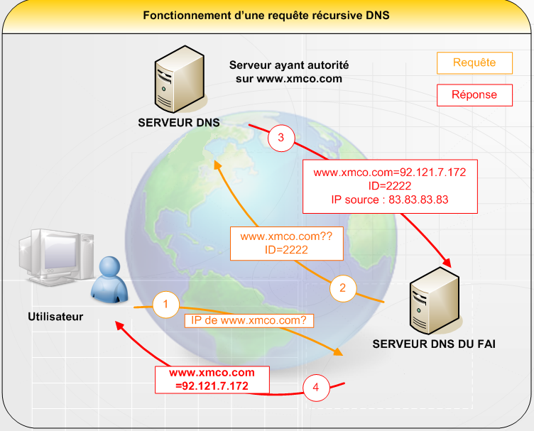

Vous avez créé votre site web, et maintenant vous voulez le mettre en ligne. Pour cela, il vous faudrait un nom de domaine accessible en plus de votre hébergement... Mais qu'est-ce qu'un nom de domaine ? Eh bien cet article va tout (ou presque :p ) vous expliquer.
Un nom de domaine (ou NDD) sert à identifier un ordinateur sur un réseau.
Le nom de domaine est composé d'au moins un mot, le label. S'il y a plusieurs labels, on doit les séparer par un point. Dans un nom de domaine, le label à l'extrême droite doit être choisi dans la liste des noms de domaines de premier niveau (en anglais TLD). Il y a peu de restrictions dans la composition des labels précédant le label de l'extrême droite (le SLD).
Il existe deux types de domaines de premier niveau :
les domaines nationaux de premier niveau (en anglais ccTLD) composés de deux lettres identifiant un pays ou un territoire indépendant. Exemple : fr pour France, pl pour Pologne, de pour Allemagne, ou encore pm pour Saint-Pierre et Miquelon ;
les domaines de premier niveau génériques (en anglais gTLD) composés de trois lettres ou plus identifiant généralement le secteur d'activité dans lequel opèrent les individus ou les organisations qui les utilisent. Exemple : com pour les sites commerciaux, info pour les services d'informations, ou bien org pour les organisations.
Les règles de dépôt d'un nom de domaine de deuxième niveau dans un domaine de premier niveau ne sont pas les mêmes pour tous les domaines de premier niveau. Le nom d'un domaine de deuxième niveau doit inclure un minimum de 3 et un maximum de 63 caractères.
Il est possible de définir des sous-domaines dans un domaine. Par exemple, www.google.com est un sous-domaine de google.com.
Sur un réseau, les ordinateurs se repèrent entre eux par une adresse IP qui leur est propre.
Un nom de domaine est en quelque sorte un « masque » sur une adresse IP. Le but d'un nom de domaine est de retenir l'adresse d'un site de manière triviale, plus simplement qu'en retenant son adresse IP.
Exemple : il est plus facile de retenir www.siteduzero.com que l'adresse du serveur : 80.248.219.123. :lol:
Ainsi, un visiteur reviendra plus facilement sur un site dont le nom est facile à retenir que sur un site dont le nom est extrêmement compliqué. De plus, un nom de domaine bien choisi favorisera le bouche à oreille et permettra au site de gagner plus vite en notoriété.
On appelle résolution de noms de domaines (ou résolution d'adresses) la corrélation entre les adresses IP et le nom de domaine associé.
Le fichier HOSTS
Avant le DNS, la résolution devait se faire grâce à un fichier texte appelé HOSTS, local à chaque ordinateur. Sous UNIX, il se trouve dans le répertoire /etc. Sous Windows, il se trouve par défaut dans %SystemRoot%\system32\drivers\etc.
Dans ce fichier, chaque ligne correspond à une adresse IP à laquelle peuvent être associés un ou plusieurs noms de domaines.
Voici à quoi ressemble le contenu d'un fichier HOSTS :
127.0.0.1 localhost
127.0.1.1 user-laptop
#The following lines are desirable for IPv6 capable hosts
::1 localhost ip6-localhost ip6-loopback
fe00::0 ip6-localnet
ff00::0 ip6-mcastprefix
ff02::1 ip6-allnodes
ff02::2 ip6-allrouters
ff02::3 ip6-allhost
L'adresse IP est séparée du nom de domaine par une tabulation.
Cependant, ce système pose un problème de maintenance car le fichier doit être recopié sur tous les ordinateurs du réseau. On ne peut pas non plus organiser hiérarchiquement les domaines. C'est pour résoudre ce problème que le DNS a été mis au point, en 1983.
Le DNS
Le système précédent de tables de conversion (le fichier HOSTS) nécessitait la mise à jour manuelle des tables de tous les ordinateurs d'un même réseau en cas d'ajout ou de modification d'un nom de machine. De plus, avec l'explosion de la taille des réseaux et leur interconnexion, il a fallu mettre en place un système de gestion des noms hiérarchisé et plus facilement administrable. Le système nommé Domain Name System (DNS) a été mis au point en novembre 1983 par Paul Mockapetris.
Ce système propose :
un espace de noms hiérarchique permettant de garantir l'unicité d'un nom dans une structure arborescente, à la manière des systèmes de fichiers d'UNIX ;
un système de serveurs distribués permettant de rendre disponible l'espace de noms ;
un système de clients permettant de « résoudre » les noms de domaines, c'est-à-dire interroger les serveurs afin de connaître l'adresse IP correspondant à un nom.
Avec DNS, la résolution se fait par l'intermédiaire d'un serveur. Quand un utilisateur souhaite accéder à un serveur web, son ordinateur émet une requête spéciale à un serveur DNS, celui-ci répond en retournant l'adresse IP du serveur. Il est également possible de poser la question inverse. On parle alors de résolution inverse.
Il existe des milliers de serveurs DNS dans le monde entier. Chacun n'a en réalité à sa disposition qu'un ensemble d'informations restreint.
Quand un client a besoin de résoudre un nom de domaine, il doit connaître l'adresse IP d'un ou plusieurs serveurs de rattachement, c'est-à-dire ceux qui vont éventuellement faire suivre la requête à un ou plusieurs autres serveurs de noms pour fournir une réponse. Les fournisseurs d'accès à internet mettent normalement à disposition de leurs clients ces serveurs de rattachement. Quand un serveur DNS (par exemple celui d'un fournisseur d'accès à internet) doit trouver l'adresse IP correspondant à un nom de domaine, une certaine communication s'instaure alors avec d'autres serveurs DNS qui, s'ils ont l'adresse du domaine demandé, vont la renvoyer au client.
Schéma de fonctionnement du DNS :

1. Le client demande l'adresse IP correspondant au domaine xmco.com.
2. Le serveur DNS de rattachement transmet la requête à différents serveurs DNS.
3. Le serveur DNS qui a l'enregistrement correspondant (ici le seul représenté) le renvoie au serveur DNS de rattachement.
4. Le serveur DNS de rattachement renvoie l'adresse IP au client qui va alors pouvoir se rendre sur le serveur de l'application.
Hep ! C'est quoi un serveur « ayant autorité » ?
Souvenez-vous, les serveurs DNS sont interconnectés et ne possèdent qu'un nombre restreint d'informations. De plus, les noms de domaines sont désormais organisés de manière hiérarchique. Cela veut dire qu'un domaine ne peut exister que si le domaine de niveau supérieur existe. En clair, siteduzero.com peut être défini car le TLD com existe et www.siteduzero.com également car siteduzero.com est défini. Le serveur qui a autorité sur le domaine est le serveur qui possède l'enregistrement complet. Lors d'une résolution, il y a une délégation d'autorité entre les serveurs jusqu'à ce que celui qui ait l'enregistrement complet soit trouvé.
Chaque domaine doit être défini, au minimum dans deux serveurs DNS :
le serveur de noms primaire (primary domain name server) ;
le serveur de noms secondaire (secondary domain name server), permettant de prendre le relai du serveur de noms primaire en cas d'indisponibilité.
Ces serveurs peuvent être interrogés pour connaître l'adresse IP associée à un nom d'hôte, ou inversement le nom d'hôte associé à une adresse IP.
Le deuxième serveur étant interrogé suivant la disponibilité ou non du premier, il est préférable que ces deux serveurs se trouvent dans deux sous-réseaux différents, afin que le nom de domaine puisse être résolu s'il y a un problème quelconque pour accéder au réseau dans lequel se trouve le premier serveur.
Le serveur le plus répandu s'appelle BIND (Berkeley Internet Name Domain). Il s'agit d'un logiciel libre disponible sous les systèmes UNIX, développé initialement par l'université de Berkeley en Californie et désormais maintenu par l'ISC (Internet Systems Consortium).
Il existe bien entendu des alternatives à BIND. Je vous conseille de jeter un œil à ces tutoriels présents sur le Site du Zéro, présentant chacun une alternative :
Le DNS Round-Robin (tourniquet en français) permet d'associer plusieurs adresses IP pour un seul nom de domaine.
Mais à quoi cela peut il bien servir ?
Tout simplement pour les sites dont le trafic est très important. Imaginer par exemple le site google.com qui génère un trafic considérable, si tous les visiteurs arrivaient en même temps sur le même serveur celui-ci finirait par faire un dénie de service, il s'agit donc de repartir la charge généré par ce trafic sur plusieurs serveurs. Ces adresses sont renvoyées de manière cyclique à chaque résolution et le client mettra en cache celle qu'il a reçue.
Le FQDN
Le FQDN (Full Qualified Name Domain, traduisez : nom de domaine pleinement qualifié). Il permet d'identifier de manière unique un hôte, il est donc de la forme hôte.domaine.tld.. Notez que le point final est obligatoire pour la résolution du nom ; en effet même si, quand vous tapez une adresse dans votre navigateur ou que vous faites un ping vous ne mettez pas ce point, lors de la résolution il est rajouté de manière tacite et implicite par la pile TCP/IP.
Le nom de domaine se dépose auprès d'un organisme international (l'Internic) ou de l'un des sous-organismes appelés « registrars » (pour la France il s'agit de l'Afnic qui gère les .fr, .re, .tf, .pm, .yt et .wf). La classification du domaine correspond généralement à une répartition géographique, ccTLD. Toutefois, il est également possible d'opter pour un gTLD, permettant de classifier le domaine selon le secteur d'activité (commercial, à but non lucratif, organisme de réseau, ?).
Pour acquérir un .fr
L'ouverture du nom de domaine dans la zone française (un site dont le nom se termine par .fr) est régie par des règles d'acquisition plus compliquées. L'Afnic, chargée d'attribuer les noms de domaines en .fr, n'en permet l'acquisition qu'aux entités respectant certaines conditions. Voici une liste non exhaustive de ces conditions :
être titulaire d'une marque déposée ;
être une société (entreprise) immatriculée au registre du commerce ;
être une association immatriculée à l'INSEE ;
être une profession libérale ;
être un artisan ;
être une collectivité publique.
Il est évidemment demandé de posséder les documents justifiant l'appartenance à l'une de ces catégories :
pour les entreprises, le numéro de SIREN/SIRET ;
pour les associations immatriculées à l'INSEE, le numéro de SIREN/SIRET ;
pour une marque déposée, un certificat de l'INPI (Institut National de la Propriété Intellectuelle), à fournir dans les 6 mois si la demande est en cours.
Cependant, l'Afnic a libéralisée progressivement les .fr, il est donc desormais possible d'acquerir un .fr pour :
toutes les catégories susmentionnées ;
les particuliers ;
toutes les associations, même non immatriculées à l'INSEE.
Étant donné que le nom de domaine doit être facile à diffuser, il est indispensable de le choisir de façon à ce qu'il soit le plus simple possible. Il est évident qu'un nom de domaine n'est pas qu'une liste complexe de caractères, il doit être choisi à bon escient et il faut éviter les écueils suivants :
choisir des noms compliqués,
choisir des noms trop longs,
utiliser des caractères spéciaux.
De plus le nom de domaine doit :
être prononçable,
avoir dans la mesure du possible une signification,
être disponible.
Le coût annuel d'un nom de domaine, sans hébergement et à titre indicatif, est de l'ordre de :
8 à 35 euros HT en .com,
10 à 40 euros HT en .fr,
11 à 25 euros HT en .eu,
environ 15 euros pour .net, .org et .info.
Ces prix peuvent varier en fonction de la durée pour laquelle vous réservez le nom de domaine.
Vous savez maintenant ce qu'est un nom de domaine, à quoi ça sert, et comment l'obtenir. Le plus simple (et le moins cher ;) ) reste encore de le commander avec l'hébergement.